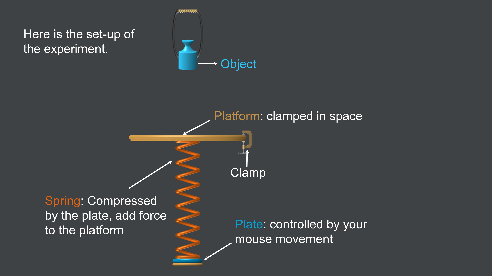
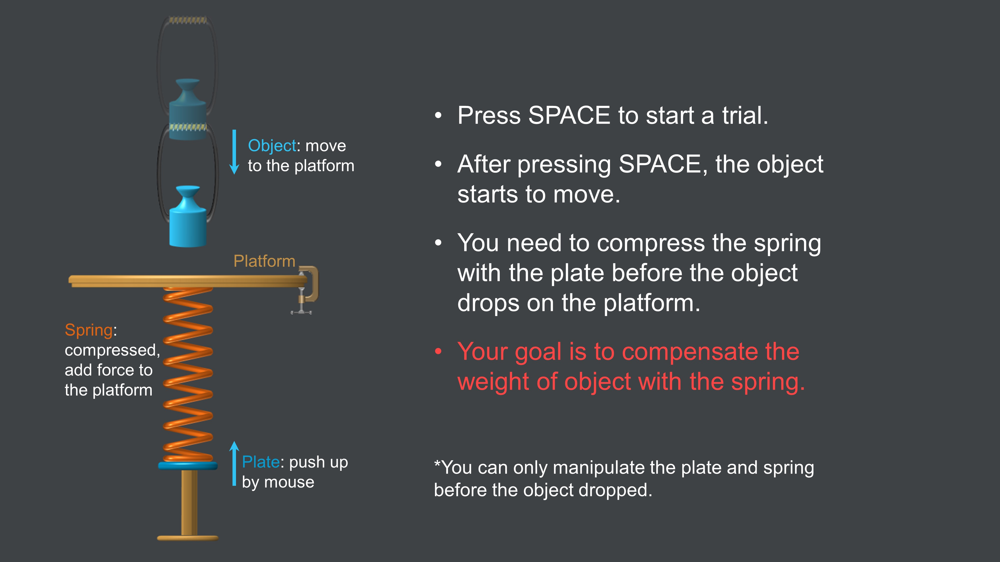
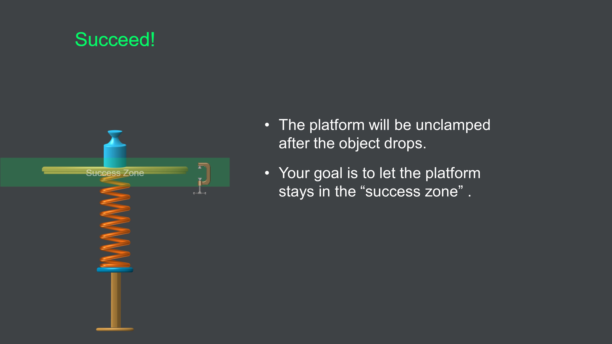
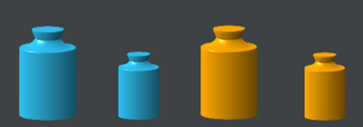

<!DOCTYPE html>
<html>
  <head>
    <title>Motor Study</title>
    
    <!-- *** CSS *** -->
    <link rel='stylesheet' type='text/css' href='jspsych-wjs-style.css'>
    
    <!-- *** JQUERY *** -->
    <script src='https://ajax.googleapis.com/ajax/libs/jquery/1.10.2/jquery.min.js'></script>
    
    <!-- *** JSPSYCH *** -->
    <script src='jspsych.js'></script>
    <script src='wjs_core.js'></script>
    <script src='jspsych-fullscreen.js'></script>
    <script src='jspsych-wjs-html-button-response.js'></script>
    <script src='jspsych-wjs-survey-all-types.js'></script>
    <script src='jspsych-wjs-survey-multi-select.js'></script>
    <script src='jspsych-wjs-spring.js'></script>
    <script src='jspsych-instructions.js'></script>

  </head>
  
  <!--THE EXPERIMENT -->
  <body>
    <script>
    
    ////////////////////////////////////////////////
    // 0. Preliminaries
    ////////////////////////////////////////////////

    wjs_experiment_name = 'spring_4_short'; // spring game with bonus
    wjs_worker_id = new URLSearchParams(window.location.search).get('workerId');
    var exitedFullScreen = false; // we check this on every trial
    var blurEvent = false; // event occurs when task window out of focus
    
    // wjs_debug_log_flag = true;         // Log debug messages to the console.
    wjs_local_save_flag = true;        // Save data locally without connecting to Firebase.
    // wjs_trial_preview_flag = false;     // Save the trial-list locally, with running experiment.

    // Define list of state names and create WJS state object.
    var StateNames = [ 'START','WAIT','GO','MOVING','FEEDBACK','RESULT','ERROR','FINISH','FULL_SCREEN','POINTER_LOCK' ]; 
    var State = new wjs_state(StateNames);
    wjs_debug_log(State);

    // How many trials will you have of each type?
    var trials = { 
      preExp: 9, // consent, survey, fullscreen, welcome, WT, WT-button, postWT, postPractice
      practice: 16,
      baseline: 80,  
      timing: 160,
      transfer: 40 
    }
    
    // compute total number of trials and initialize counter (for progress bar)
    wjs_trial_total = Object.values(trials).reduce((a, b) => a + b); // sum over values in an object
    wjs_trial_count = 0; // counts completed trials (used for progress bar)

    wjs.totalbonus = 0;

    //var MaxPractice = 10; // max # of practice trials to reach performance criterion

    var instructionsMinTime = 500;
    
    ////////////////////////////////////////////////
    // 1. Create structure for experiment
    ////////////////////////////////////////////////
     
    /* Create INSTRUCTIONS objects */
    var trial_welcomeScreen = {
      timeline: [{
        type: 'wjs-html-button-response',
        stimulus: 
        '<h3 align=center>Welcome to the weight holding game!</h3><br>' +
        '<p class="instructions-text", align=center >'+
        '<p align=center>Your task is to hold a weigth with your mouse.<br>' +
        'Please read the instructions in following pages carefully.<br><br></p>'+
        '<br><br>'+

        '<p align=center>Click the button to read detailed instructions.</p>',
        choices: ['Instructions'],
        prompt: '<br><br><br><br><br>',
        requireFullScreen: true,
        hideButtonDuration: instructionsMinTime,
        //button_location_y: 0.75*window.screen.availHeight // put button close to home position
      },
    {
      type: 'instructions',
      pages: [
      // '',
      // '',
      '',
      // '',
      // '',
      // '',
      '',
      '',
      '<h3 align=center>Let us start with a guided demo.</h3>'],
      show_page_number: true,
      show_clickable_nav: true
    }],
      on_start: function() { $('body').css('cursor', 'auto'); }, // show cursor before button click
    };
    
    /* Create BLOCK objects */
    var walkthrough_block = {
        timeline: [
        { // single demo trial
          type: 'wjs-spring',
          demo_trial: true,
          obj_choice: 0,
          pre_time: 3,
          data: { TrialType: 'WalkThrough' } // data that is saved for every type of that trial
        },
        { // repeat demo trial?
          type: 'wjs-html-button-response',
          stimulus: 
          '<h3 align=center>Great!</h3>' +
          '<p class="instructions-text", align=center >'+
          '<p align=center>Let\'s try the demo one more time.<br><br></p>',
          choices: ['Continue'],
          requireFullScreen: true,
          on_start: function() {
            document.exitPointerLock = document.exitPointerLock ||
                                    document.mozExitPointerLock;
        // Attempt to unlock
            document.exitPointerLock();
            $('body').css('cursor', 'auto'); // show cursor 
          }, 
          on_finish: function() {}//$('body').css('cursor', 'none')} // hide cursor 
        }],
      }

      var walkthrough_block2 = {
      timeline: [{ // single demo trial
        type: 'wjs-spring',
        demo_trial: true,
        obj_choice: 0,
        pre_time: 3,
        data: { TrialType: 'WalkThrough' } // data that is saved for every type of that trial
      },
      { // repeat demo trial?
        type: 'wjs-html-button-response',
        stimulus: '<h3>Well done! </h3>' +
         '<p class="instructions-text", align=center >'+
         '<p align=center>If you wish to repeat the guided demo, click \'Repeat\'.<br>' +
         'Otherwise, click \'Next\' to move on to the next part.<br><br></p>',
        choices: ['Repeat','Next'],
        requireFullScreen: true,
        on_start: function() {
          document.exitPointerLock = document.exitPointerLock ||
                                     document.mozExitPointerLock;
          // Attempt to unlock
          document.exitPointerLock();
          $('body').css('cursor', 'auto'); // show cursor 
        }, 
        on_finish: function() {}//$('body').css('cursor', 'none')} // hide cursor 
      }],
      loop_function: function(data){ // loop until participant clicks on 'No'
        if(data.values()[1].button_pressed==="1") { // 'Next' -> Don't repeat
          return false;
        } else {
          // this runs after endTrialRoutine (so we have to undo the increments)
          wjs_trial_count -= 2;
          jsPsych.setProgressBar(wjs_trial_count/wjs_trial_total);
          return true; // Repeat
        }
      }
    }
    var postDemoMinTime = 3000;
    var trial_postDemoScreen = {
      timeline: [
      {
        type: 'wjs-html-button-response',
        stimulus:  
        '<h3 align=left>Next Step:</h3>' +
        '<p class="instructions-text" align=left>'+
        '&ndash; You will see 4 objects each time. They have different weights.<br>' +
        '&ndash; When you press SPACE, randomly, one of them will move to the platform.<br>' +
        '&ndash; The plate needs to be pushed up higher for a heavier weight.<br></p>' +
        '<h4 style="color:red" align=left>'+
        'Notice: The larger one is not necessarily to be heavier (i.e. objects may have different densities).<br></h4>'+
        '',
        choices: ['Next'],
        prompt: '<br><br><br><br><br>',
        requireFullScreen: true,
        hideButtonDuration: postDemoMinTime,
        //button_location_y: 0.75*window.screen.availHeight
      },
      {
        type: 'wjs-html-button-response',
        stimulus:  
        '<h3 align=left>Tips&#58;</h3> '+
        '<p class="instructions-text">'+
        '&ndash; At the beginning, you may have no idea about the weight of each object, but you will figure it out with practice.<br>' +
        '&ndash; Focus on the object instead of the plate.</p>' +
        '<p align=center>&nbsp;&nbsp;&nbsp;Let\'s start with a few practice trials.</p>',
        choices: ['Start practice'],
        requireFullScreen: true,
        hideButtonDuration: 2000,
        //button_location_y: 0.75*window.screen.availHeight
      }],
      on_start: function() {
        $('body').css('cursor', 'auto'); // show cursor before button click
      }, 
    };
    
    
    var practice_trialList = {
      choice: [0 ,1 ,2, 3],
      pt: [3]
    };

    var reps_pr = 4;
    var choiceList_pr = [], ptList_pr = [], practice_full = []; 
    for (var i = 1; i <= reps_pr; i++){
      practice_full = jsPsych.randomization.factorial(practice_trialList, 1, true);
      choiceList_pr.push(...practice_full.choice);
      ptList_pr.push(...practice_full.pt);
    }

    // console.log(choiceList_pr);
    // console.log(ptList_pr);
    wjs.trialNum_pr = 0;
    // practice block
    var practice_block = {
      timeline: [{
        type: 'wjs-spring',
        pra_trial: true,
        obj_choice: function(){ return choiceList_pr[wjs.trialNum_pr] },
        pre_time: function(){ return ptList_pr[wjs.trialNum_pr] },
        data: { TrialType: 'Practice' } // data that is saved for every type of that trial
      }],
      on_finish: function() { wjs.trialNum_pr++; }, 
      repetitions: trials.practice
    };


    var trial_postPracticeScreen = {
      timeline: [{
        type: 'wjs-html-button-response',
        stimulus: 
          '<h3 align=left>Good job! You\'ve reached the end of practice.</h3>' +
          '<p class="instructions-text">'+
          '&ndash; The experiment includes 2 sessions, 280 trials in total (~25 minutes).<br>'+ 
          '&ndash; You will get &cent1 bonus per success trial.<br>'+
          '&ndash; You may have a short break between trials but don\'t switch to another task.<br></p>'+
          //'&ndash; Your normal mouse cursor should always be replaced by a white dot.<br>'+
          //'<a style="margin-left:0px">&ndash; However, background processes may cause your normal cursor to re-appear.<br></a>'+
          //'<a style="margin-left:0px">&ndash; If this occurs, please immediately exit and re-enter full screen mode.<br></a></p>',
          '<p align=center>Click the button to start formal experiment.</p>',
          choices: ['Start experiment'],
        requireFullScreen: true,
        hideButtonDuration: postDemoMinTime,
        //button_location_y: 0.75*window.screen.availHeight
      }],
      on_start: function() {
        document.exitPointerLock = document.exitPointerLock ||
                                     document.mozExitPointerLock;
        // Attempt to unlock
        document.exitPointerLock();
        $('body').css('cursor', 'auto');
      }, // show cursor before button click
    };

    var baseline_trialList = {
      choice: [0 ,1 ,2, 3],
      pt: [2]
    };
    var reps_bs = 20;
    var choiceList_bs = [], ptList_bs = [], baseline_full = []; 
    for (var i = 1; i <= reps_bs; i++){
      baseline_full = jsPsych.randomization.factorial(baseline_trialList, 1, true);
      choiceList_bs.push(...baseline_full.choice);
      ptList_bs.push(...baseline_full.pt);
    }
    // console.log(choiceList_bs);
    // console.log(ptList_bs);
    wjs.trialNum_bs = 0;
    // baseline block
    var baseline_block = {
      timeline: [{
        type: 'wjs-spring',
        obj_choice: function(){ return choiceList_bs[wjs.trialNum_bs] },
        pre_time: function(){ return ptList_bs[wjs.trialNum_bs] },
        data: { TrialType: 'Baseline' } // data that is saved for every type of that trial
      }],
      on_finish: function() { wjs.trialNum_bs++; }, 
      repetitions: trials.baseline
    };

    var between_sessions = {
      timeline: [{
        type: 'wjs-html-button-response',
        stimulus: 
        '<h3 align=center>This the the end of the first session.</h3><br>' +
        '<p class="instructions-text", align=center >'+
        '&ndash; In the second session, the object will move with a faster speed.<br>' +
        '&ndash; You need to respond quickly after press the SPACE<br>'+
        '&ndash; Let\'s try a demo first.'+
        '<br><br><br></p>'+

        '<p align=center>Click the button to start the demo.</p>',
        choices: ['Start Demo'],
        prompt: '<br><br><br><br><br>',
        requireFullScreen: true,
        hideButtonDuration: 3000
      }],
        on_start: function() {
        document.exitPointerLock = document.exitPointerLock ||
                                     document.mozExitPointerLock;
        // Attempt to unlock
        document.exitPointerLock();
        $('body').css('cursor', 'auto');
        },
    }

    var walkthrough_block3 = {
      timeline: [
      { // single demo trial
        type: 'wjs-spring',
        demo_trial: true,
        obj_choice: 0,
        pre_time: 0.8,
        data: { TrialType: 'WalkThrough' } // data that is saved for every type of that trial
      },
      { // repeat demo trial?
        type: 'wjs-html-button-response',
        stimulus: '<h3>Well done! </h3>' +
         '<p class="instructions-text", align=center >'+
         '<p align=center>If you wish to repeat the guided demo, click \'Repeat\'.<br>' +
         'Otherwise, click \'Start Experiment\' to move on and start the second session.<br><br></p>',
        choices: ['Repeat','Start Experiment'],
        requireFullScreen: true,
        on_start: function() {
          document.exitPointerLock = document.exitPointerLock ||
                                     document.mozExitPointerLock;
          // Attempt to unlock
          document.exitPointerLock();
          $('body').css('cursor', 'auto'); // show cursor 
        }, 
        on_finish: function() {}//$('body').css('cursor', 'none')} // hide cursor 
      }],
      loop_function: function(data){ // loop until participant clicks on 'No'
        if(data.values()[1].button_pressed==="1") { // 'Next' -> Don't repeat
          return false;
        } else {
          // this runs after endTrialRoutine (so we have to undo the increments)
          wjs_trial_count -= 2;
          jsPsych.setProgressBar(wjs_trial_count/wjs_trial_total);
          return true; // Repeat
        }
      }
    }


    var timing_trialList = {
      choice: [0 ,1 ,2 ,3],
      pt: [0.8]
    };
    var reps_ti = 40;
    var choiceList_ti = [], ptList_ti = [], timing_full = []; 
    for (var i = 1; i <= reps_ti; i++){
      timing_full = jsPsych.randomization.factorial(timing_trialList, 1, true);
      choiceList_ti.push(...timing_full.choice);
      ptList_ti.push(...timing_full.pt);
    }
    // console.log(choiceList_ti);
    // console.log(ptList_ti);
    wjs.trialNum_ti = 0;
    // timing block
    var timing_block = {
      timeline: [{
        type: 'wjs-spring',
        obj_choice: function(){ return choiceList_ti[wjs.trialNum_ti] },
        pre_time: function(){ return ptList_ti[wjs.trialNum_ti] },
        data: { TrialType: 'Timing' } // data that is saved for every type of that trial
      }],
      on_finish: function() { wjs.trialNum_ti++; }, 
      repetitions: trials.timing
    };

    var transfer_trialList = {
      choice: [0 ,1 ,2, 3],
      pt: [0.8]
    };
    var reps_tr = 10;
    var choiceList_tr = [], ptList_tr = [], transfer_full = []; 
    for (var i = 1; i <= reps_tr; i++){
      transfer_full = jsPsych.randomization.factorial(transfer_trialList, 1, true);
      choiceList_tr.push(...transfer_full.choice);
      ptList_tr.push(...transfer_full.pt);
    }
    // console.log(choiceList_tr);
    // console.log(ptList_tr);
    wjs.trialNum_tr = 0;
    // transfer block
    var transfer_block = {
      timeline: [{
        type: 'wjs-spring',
        repeat: false,
        obj_choice: function(){ return choiceList_tr[wjs.trialNum_tr] },
        pre_time: function(){ return ptList_tr[wjs.trialNum_tr] },
        random: true,
        data: { TrialType: 'Transfer' } // data that is saved for every type of that trial
      }],
      on_finish: function() { wjs.trialNum_tr++; }, 
      repetitions: trials.transfer
    };

    var save_screen = {
      timeline: [{
        type: 'wjs-html-button-response',
        stimulus: '<h3>The experiment is over. Thank you!</h3>'+
                  "<h3>Your total bonus is \u0024 " + 
                  "<span id='finalbonus'></span>"+ 
                  "</h3><br>",
        choices: ['Get Completion Code']
      }],
      on_load: function(){
        $('#finalbonus').html(wjs.totalbonus/100);
      },
      on_start: function() {
        document.exitPointerLock = document.exitPointerLock ||
                                     document.mozExitPointerLock;
        // Attempt to unlock
        document.exitPointerLock();
        $('body').css('cursor', 'auto');
      }, // show cursor
    }

    ////////////////////////////////////////////////
    // 2. Push everything to timeline
    ////////////////////////////////////////////////

    /* Create empty experiment timeline */
    var timeline = [];

    if( !wjs_trial_preview_flag ) {
     timeline.push(wjs_trial_consent);
     timeline.push(wjs_trial_survey);
      timeline.push(wjs_trial_enter_fullscreen);
     timeline.push(trial_welcomeScreen);
     timeline.push(walkthrough_block);
     timeline.push(walkthrough_block2);
     timeline.push(trial_postDemoScreen);
     timeline.push(practice_block);
     timeline.push(trial_postPracticeScreen);
    };
      
    timeline.push(baseline_block); 
    timeline.push(between_sessions);
    timeline.push(walkthrough_block3);
    timeline.push(timing_block);
    timeline.push(transfer_block);
    
    if( !wjs_trial_preview_flag ) {
      timeline.push(wjs_trial_exit_fullscreen);
      timeline.push(wjs_trial_save_screen);
      if( !wjs_local_save_flag ) { timeline.push(wjs_trial_code_screen); };
    };
    
    ////////////////////////////////////////////////
    // 3. Start the experiment
    ////////////////////////////////////////////////
    
    if (!wjs_browser_check('Chrome',null) ) { // Include='Chrome', Exclude=null.
      var wrong_browser = {
    			type: 'wjs-html-button-response',
    			stimulus: '<p>This experiment is only supported in Chrome.<br>' +
    			          'Please copy the full URL and reopen it in Chrome. <br>' +
    			          'Leave the MTurk window open in your current browser.<br>' +
    			          'Return to the MTurk window to submit after receiving your code.</p>',
    			choices: ['Close window']}
    	jsPsych.init({ 
    	  timeline: [wrong_browser],
    	});
    }else{ // Start the experiment
      jsPsych.init({
        timeline: timeline,
        default_iti: wjs_inter_trial_interval,
        'show_progress_bar': true,
        'auto_update_progress_bar': false,
        'message_progress_bar': 'Time Elapsed: <label id="minutes">00</label>:<label id="seconds">00</label><br>',
        on_data_update: function(trial_data){
          if( !wjs_local_save_flag ) { wjs_firebase_trial_save(trial_data); };
        },
        on_trial_finish: function(trial_data){
          endTrialRoutine(trial_data);
        },
        on_interaction_data_update: function(interaction_data) {
          if (interaction_data.event==='fullscreenexit'){
            exitedFullScreen = true;
          }
          if (interaction_data.event==='blur'){
              blurEvent = true;
          }
        },
        on_finish: function() {
          if( wjs_local_save_flag || wjs_trial_preview_flag ) 
          { // Save data locally for testing.
            jsPsych.data.get().localSave('json',`${wjs_experiment_name}_${wjs_date_string()}.json`);
          };
        },
        // on_close: function(event) {
        //   event.preventDefault();
        //   event.returnValue = '';
        // },        
        // on_finish: function() {jsPsych.data.get().localSave('json','trackingData.json');} // uncomment for quick output check  
      });
      
      // start the experiment timer
      var minutesLabel = document.getElementById("minutes");
      var secondsLabel = document.getElementById("seconds");
      var totalSeconds = 0;
      setInterval(setTime, 1000);
    }
    
    ////////////////////////////////////////////////
    // Extra functions
    ////////////////////////////////////////////////
         
    // Load .json file
    function GetJsonData(url) {
        var result = [];
        $.ajax({
            type: "GET",
            url: url,
            cache: false,
            dataType: "json",
            async: false,
            success: function (json) {
                result = json;
            }, failure: function () {
                console.log('fail to load data');
                result = [];
            }
        })
        return result;
    }

    // get a random integer
    function getRandomInt(min, max) {
      min = Math.ceil(min);
      max = Math.floor(max);
      return Math.floor(Math.random() * (max - min + 1)) + min; //The maximum is inclusive and the minimum is inclusive
    }

    /* Function to remember some data from this trial for next trial */
    function endTrialRoutine(data) {
      wjs_trial_count++;
      
      data.TrialNumber = wjs_trial_count; // add trial number to output
      
      if (wjs_trial_count === 1) { // in very first trial, save state names
        data.StateNames = StateNames;
      }
      
      if (exitedFullScreen){
        wjs_miss_trial(data,'exitFullScreen');
        exitedFullScreen = false;
      }
      
      if (blurEvent){
        wjs_miss_trial(data,'blurEvent');
        blurEvent = false;
      }

      jsPsych.setProgressBar(wjs_trial_count/wjs_trial_total);
    };
     
    function setTime() {
      ++totalSeconds;
      secondsLabel.innerHTML = wjs_pad_leading(totalSeconds % 60,2,'0');
      minutesLabel.innerHTML = wjs_pad_leading(parseInt(totalSeconds / 60),2,'0');
    };
    </script>
  </body>
</html>
